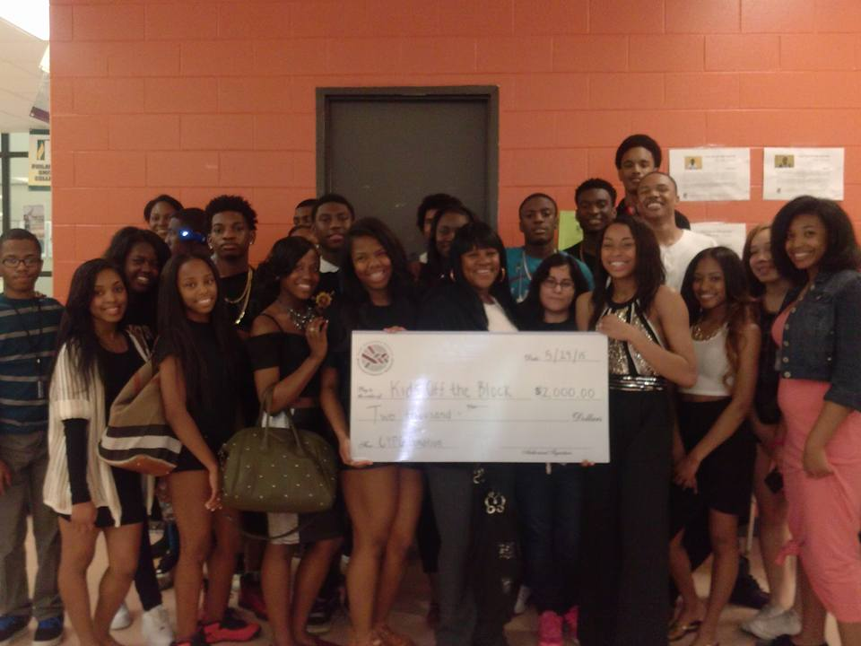

Writing Short Stories
Cooking
Singing
Using right-handed utensils with my left hand
Baby-sitting
I don't have prior work experience......
I had started volunteering for service learning hours as a freshman, but later wanted to pursue volunteering because I had the heart for it. When I could, I would help my church by packing up food items and sending them to homeless shelters or handing them out to the homeless. During the course of my junior year, my class had partnered with the University of Chicago's Chicago Youth Philanthropy Group (CYPG) to fundraise and donate $1,000 to help the language barrier between parents and their children. This summer, I plan to volunteer at pet shelters and help find better solutions to save animals from being "put to sleep" when no one has adopted them yet.

Class of 2014 with CYPG
Class of 2015 with CYPG